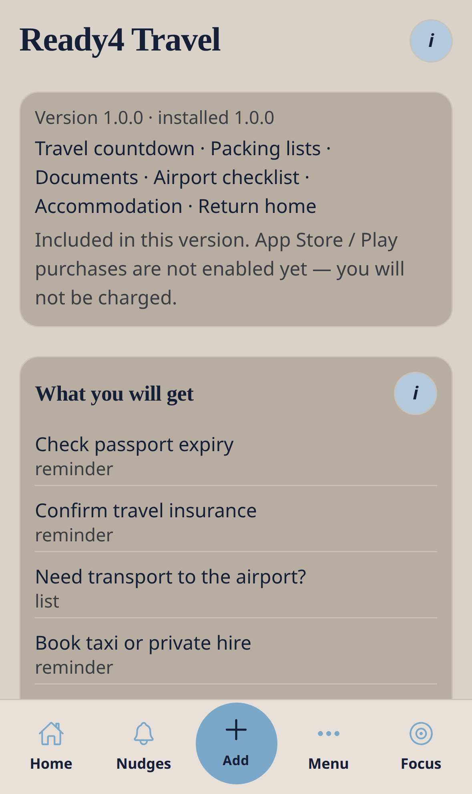
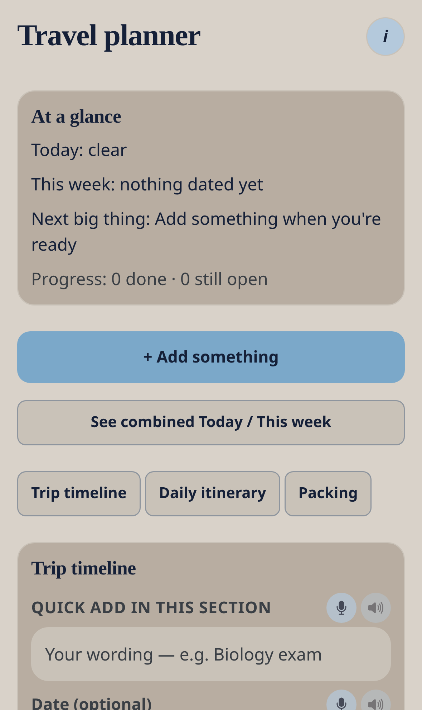

Paid catalogue (no charge on TestFlight while billing is off)
Ready4 Travel
Passports, packing, transport, airport extras, stays and a calm return-home checklist.
Nudge me Ready v3 · 0.3.1 · Ready4 pack · Data stays on this phone
What this pack is for
Travel countdown · Packing lists · Documents · Airport checklist · Accommodation · Return home
How to find it
- Open Menu → Ready4Packs (or Home → Explore).
- Open Ready4 Travel.
- Read the preview, then tap install. On TestFlight you will not be charged if billing is off.
- Editable items appear in Nudges and What’s coming up.


What you will get
Everything stays editable. Skip, snooze or remove without penalty.
| Template | Type | Notes |
|---|---|---|
| Check passport expiry | reminder | Confirm your passport is valid for your trip and any destination rules. |
| Confirm travel insurance | reminder | Check cover dates, policy number, and emergency contact details. |
| Need transport to the airport? | list | Tick the option that fits. Put your airport name in the notes (e.g. Heathrow) for local taxi and parking links on this card. |
| Book taxi or private hire | reminder | Add your airport or home area in the notes. Open taxi links below when ready. |
| Pay or book airport parking | reminder | Add your airport name. Use the parking links below. Confirm booking reference. |
| Book or confirm your stay | reminder | Destination: (add place). Compare stays using the links on this card. |
| Airport extras for this trip? | list | Tick what would help. Put your airport name in the notes for official links. |
| Arrange special assistance | reminder | Add your airport name. Use official assistance links and request help through your airline. Organisational support only. |
| Packing checklist | list | Tick as you pack. Edit freely for your trip. |
| Online check-in | reminder | Open when check-in becomes available and save boarding passes. |
| Leave for the airport | reminder | Set your own departure time based on traffic and security queues. |
| Return-home checklist | list | A soft landing after travel. |
Everyday workflow
- Install the pack once.
- Open a template from Nudges and change the title, day or checklist to match your life.
- Use Later, Sorted, Smaller or Ask on the list.
- From Add, use the extra pack actions if you need a new item in this area.
- Open the pack planner (Home pack tile, or Menu if shown) for today / this week in this pack.
- Optional: turn on Push so dated items can nudge the lock screen.

What Add shows after install
These choices appear under the six everyday paths only after this pack is installed.
| Path | Extra action |
|---|---|
| Plan it | Plan a trip |
| Plan it | Packing list |
| Book & go | Flights / bookings |
| Remember it | Travel documents |
| Buy & pay | Travel insurance |
My money
After install, Menu → My money can show a project budget named Travel budget. Core My money still works without this pack.
Kind actions
Later, Sorted, Smaller, Ask, skip and remove never shame you. Progress over perfection.
Remove the pack
From the pack preview you can remove unedited items only, or everything from this pack. Unrelated nudges stay.